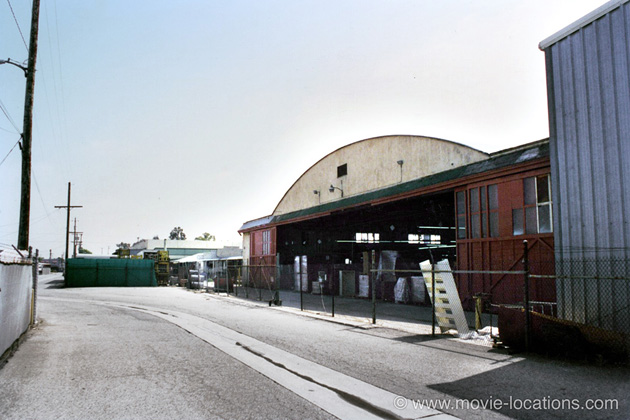

Casablanca
Main Content

Based on an unproduced play (Everybody Comes To Rick’s by Murray Burnett and Joan Alison), this confused production, with a script changing from day to day and no ending decided, was never likely to produce one of the great weepies of all time. Yet, finally, all the pieces fell into place perfectly.
Casablanca is almost entirely studio-bound, shot on the Warner Bros lot in Burbank, and, with studio boss Jack Warner’s customary thrift, recycling sets from previous productions.
Eastern sets were rehashed from The Desert Song, while the railway station was leftover from the Bette Davis weepie Now Voyager. If you want to see the original plane from the movie, and you’re willing to suspend your disbelief, it’s rumoured that it’s included in the Casablanca tableau at the Disney’s Hollywood Studios in Orlando, Florida, where audio-animatronics recreate ‘great scenes from the movies’.
The large hanging lamps from Rick’s Bar could be seen in the Lighting Prop Shop, and Sam’s (Dooley Wilson) surprisingly tiny piano was featured on the Warner Bros VIP Studio Tour. I believe it's since been sold. The tour can be a bit unpredictable, according to filming schedules – this is definitely not like the Universal theme park – it really is an intimate and technical 21/4 hour tour of the determinedly lo-tech studio.
You can see locations from Spider-Man, Minority Report and Gremlins among many others, along with TV faves such as E.R. and The West Wing. There’s always the chance of glimpsing real filming (although television stuff is most likely). Numbers are limited, so book ahead. There’s also a DeLuxe tour, a couple of hours longer and including lunch in the studio commissary.
The famous farewell scene on the tarmac was filmed, not at an actual airport, but at Warner’s, on Stage 21 or Stage 1 – according to which version you believe.
There is one location to be visited, though. The arrival of Captain Strasser (the splendidly nasty Conrad Veidt) was filmed at the old Metropolitan Airport at Van Nuys near Burbank.
The site has since been incorporated into Van Nuys Airport, 6590 Hayvenhurst Avenue, occupying the area between Woodley Avenue to the east, Balboa Boulevard to the west, and Roscoe Boulevard and Vanowen Street. The art deco control tower has been demolished but, until recently, you could have seen one of the old hangars from the movie.
When the airport was realigned, the two hangars were no longer contained within the terminal boundaries. Used as engineering workshops, they could be found on Waterman Drive, a tiny private street running west from Woodley Avenue between Daily Drive and Lindbergh Street, to the northeast of the airport lot. One hangar was demolished some years ago, but the other survived. Sadly, this final trace of Casablanca – which stood on the south side of the slight bend in the drive – has now also disappeared.
It seems, though, that the façade of this last hangar was dismantled and put into storage, and there are plans for it to be restored one day. Let’s hope.
Visit Info
Visit The Film Locations
California | Los Angeles
Visit: Los Angeles
Flights: Los Angeles International Airport (LAX), 1 World Way, Los Angeles, CA 90045 (tel: 424.646.5252)
Travelling around: Los Angeles Metro
VISIT: Warner Bros VIP Studio Tour, 3400 West Riverside Drive, Burbank, CA 91522 (tel: 877.492.8687)